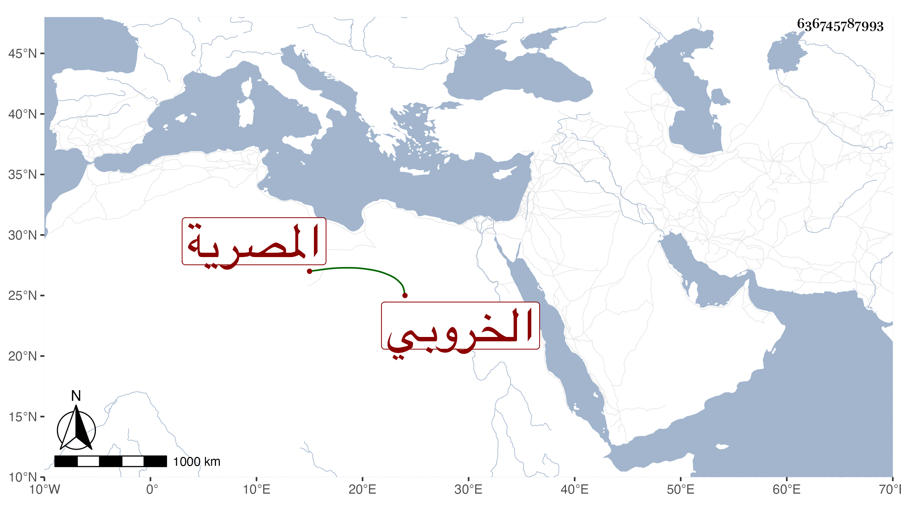

0902Sakhawi.DawLamic.ITO20230111-ara1.EIS1600.636745787993
Biography ID: 636745787993
702
فوز ابنة محمد بن عمر بن عبد العزيز الخروبي المصرية ابنة أخت شيخنا ، وأمها ست الركب المذكورة في ذلك القرن ، أجاز لها باستدعاء خالها في أوائل سنة سبع وتسعين خلق منهم أبو هريرة بن الذهبي وأبو الخير بن العلائي وأبو الفرج ابن الشيخة والشهاب أحمد بن أبي بكر بن العز ، وماتت في يوم الخميس مستهل المحرم سنة اثنتين وخمسين وصلى عليها خالها من الغد بجامع عمر وعقب صلاة الجمعة وكان قد اختل عقلها نحو عشرين سنة فكانت تغيب وتحضر فاذا حضرت تكلمت أحسن كلام بحيث أشبه حالها في هذا بما يحكى عن عقلاء المجانين رحمها الله وعوضها الجنة .
